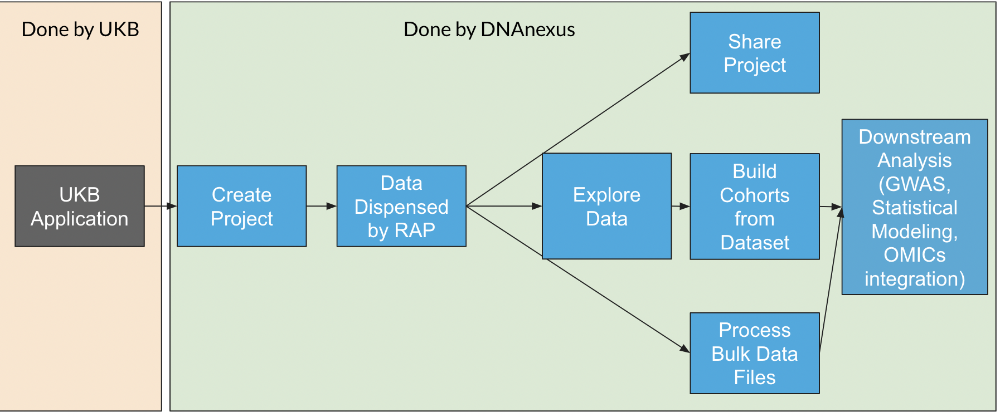

UK Biobank Research Analysis Platform
What’s Different?
There are three main differences with UK Biobank and the Core DNAnexus Platform.
- You are limited to sharing within your own application ID.
- The participant identifiers (
eids) are different across applications. - There is a
Bulk/File Folder that contains many of the files you want to analyze.
Application ID and Sharing
What is an application ID?

Psuedonymization and Participant IDs
Within an application, the participant IDs (also known as EIDs) are unique, through the pseudonymization process. This process has been done to ensure security and anonymity of participants. This means that you cannot join data across applications.
For example, if I’m in application ID 43333 and you’re in application 11111, our EIDs will not correspond because we have unique EIDs. Our data files are also mapped to these unique IDs.
So if I make a pheno matrix with EIDs and you want to reuse this pheno matrix in your application, it won’t work, because our EIDs don’t match up.
Bulk Files
The other difference with UKB RAP is that a lot of the data (image, genomics, etc) are available as files that have been dispensed into your Bulk/ folder.
Here are a few examples of searching for bulk files using dx find data:
Search on Field ID
You will need to find Field IDs for particular fields that you’re interested in. Sometimes there are multiple measurements for Field IDs
Example Jobs on UKB
Extracting Pheno Data from the RAP Dataset
This is a question we get a lot. I’ll explain the current two best ways to extract the pheno data:
- Use the Table Exporter App to export the phenotype fields to a CSV file. You have the option to select a decoded file when you run it.
- Use the dx-toolkit command
dx extract_datasetfrom Python ordx extract_datasetfrom R to extract raw values to a CSV file, and decode the file manually. If your query takes longer than 2 minutes to run, then you will have to start a Spark JupyterLab Cluster and run the SQL query generated bydx extract_datasetwith the--sqloption.
The first thing you need to do is identify the dataset in your project. Make sure that you chose to dispense data in your project (see above), and the dataset should be in the root of your project and begin with dataset-.
You’ll want to grab the record ID for your dataset. You can find it by selecting your dataset in the GUI and clicking the “i” button in the top-left.
Using R/RStudio on RAP
One of the nice features of RAP is that you can run R/RStudio on it.
The first thing you’ll notice is that the Files tab in RStudio is isolated from the project storage.
To access data in your RStudio project, you will have to use dx download or dxFUSE to load the data.
Here’s a quick table that talks about the main differences with using RStudio on RAP compared to a local installation of RStudio.
| Feature | Local RStudio | RStudio on RAP |
|---|---|---|
| Accessing Files | Has Access to your local filesystem | Access files in RAP project using dxfuse (/mnt/project/myfile.txt/) or using dx download |
| Installing Packages | Use install.packages() |
Init renv in project, then install packages |
| Saving Projects | Save files in project | Use snapshot dx backup-folder capability to save project folder to RAP Storage |
| Opening Projects | Open .rproj file in Project |
Use dx restore-folder to restore project folder, then open .rproj file |
Just because you have closed your RStudio Session does not mean that the job is terminated. Use the red terminate button on the top of the RStudio interface to stop the cloud worker.
Looking at files in your RAP Project
Let’s take a quick look at the files in our /Bulk/ folder. In the RStudio console, we can use list.files() to do this.
Note we put a /mnt/project/ in front of /Bulk/. This is how we access the file system contents using dxFUSE.
list.files("/mnt/project/Bulk/")The response from the console is this:
[1] "Activity" "Brain MRI"
[3] "Carotid Ultrasound" "Electrocardiogram"
[5] "Exome sequences" "Exome sequences_Alternative exome processing"
[7] "Exome sequences_Previous exome releases" "Genotype Results"
[9] "Heart MRI" "Imputation"
[11] "Kidney MRI" "Liver MRI"
[13] "Pancreas MRI" "Protein biomarkers"
[15] "Retinal Optical Coherence Tomography" "Whole Body DXA"
[17] "Whole Body MRI" "Whole genome sequences" Say we want to dive deeper into Exome sequences. We can run:
list.files("/mnt/project/Bulk/Exome sequences")And we’ll see the different formats of the Exome data:
[1] "Exome OQFE CRAM files"
[2] "Exome OQFE variant call files (VCFs)"
[3] "Population level exome OQFE variants, BGEN format - final release"
[4] "Population level exome OQFE variants, BGEN format - interim 450k release"
[5] "Population level exome OQFE variants, PLINK format - final release"
[6] "Population level exome OQFE variants, PLINK format - interim 450k release"
[7] "Population level exome OQFE variants, pVCF format - final release"
[8] "Population level exome OQFE variants, pVCF format - interim 450k release" Within each of these folders is a series of numbered folders that have two digits. The two digits (such as 11) are the first two digits of the EIDs that are in the folder. For example, a file with an EID of 2281131 is going to be in 22/ folder.
There are some hard limits to the number of files that can be in a folder. Thus, each set of 500K files (such as 1331113.vcf.gz) is split up into multiple folders with about 10000 files in each.
Reproducible Research using RStudio on RAP
My key piece of advice when running RStudio on RAP is to use the following process.
- Initialize a new RStudio project.
- Use
renvto install packages to your RStudio Project. - Load data either using
dx download(for smaller batches of files) or dxFUSE (using paths like/mnt/project/myfile.txt). - Use the snapshot functionality in
dx-toolkitto save (dx backup-folder-/) your project into RAP Storage. - To resume your work, restore (
dx restore-folder) your project from RAP Storage.